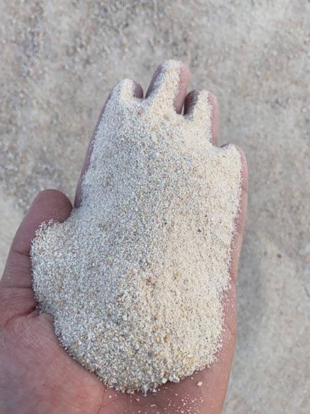
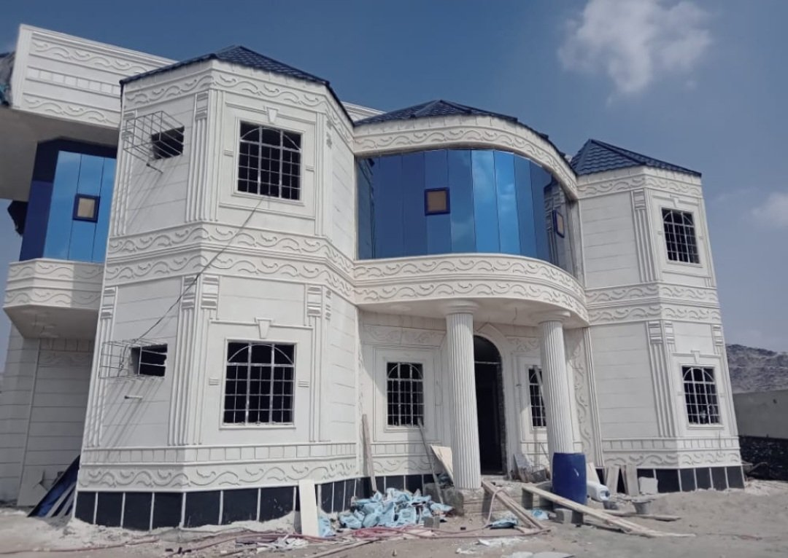
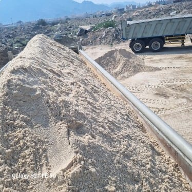

Taima bat7a is known for its distinctive red color and very fine texture, making it the perfect choice for many construction and delicate finishing works. Desert Sands Establishment provides it with the highest levels of quality and purity, ensuring you get perfect results in your projects.
Taima bat7a is specifically used in works that require high precision and an aesthetic appearance, such as final finishes, decor works, and in some types of mortar that need extreme fineness. Its freedom from impurities ensures excellent consistency when mixing and contributes to the strength and durability of the final material.
Advantages of Taima Bat7a
- A distinctive natural red color that adds a special aesthetic appeal.
- A very fine texture, ideal for delicate finishes and decor works.
- High quality and superior purity, free from organic materials and impurities.
- Helps to achieve smooth, level, and flawless surfaces.
- Available in quantities that meet the needs of various projects in Makkah and surrounding areas.
- Fast and reliable delivery to ensure the continuity of your work.
- Competitive prices while maintaining the highest quality standards.
Common Uses of Taima Bat7a
- Final Finishes: For plastering walls and ceilings that require extreme smoothness before painting.
- Decor Works: In special decorative mixes that benefit from its color and texture.
- Fine Building Mortar: In some types of mortar that need very fine granules.
- Filling Small Gaps: For filling fine gaps in construction work.
- Restoration Works: For repairing small cracks and imperfections on surfaces.
Choose Taima bat7a from Desert Sands Establishment for your projects that require a perfect final touch and unmatched quality. Our team is ready to provide support and advice, and to fulfill your requests as quickly as possible. Contact us now for a free consultation or to request a quote.